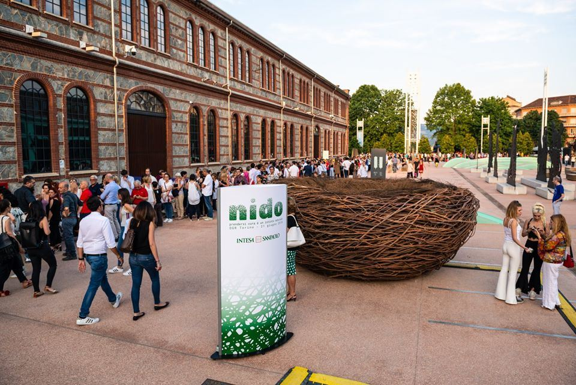
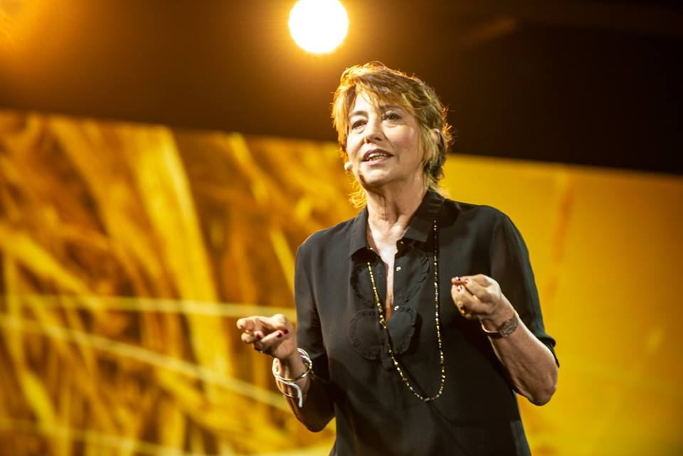
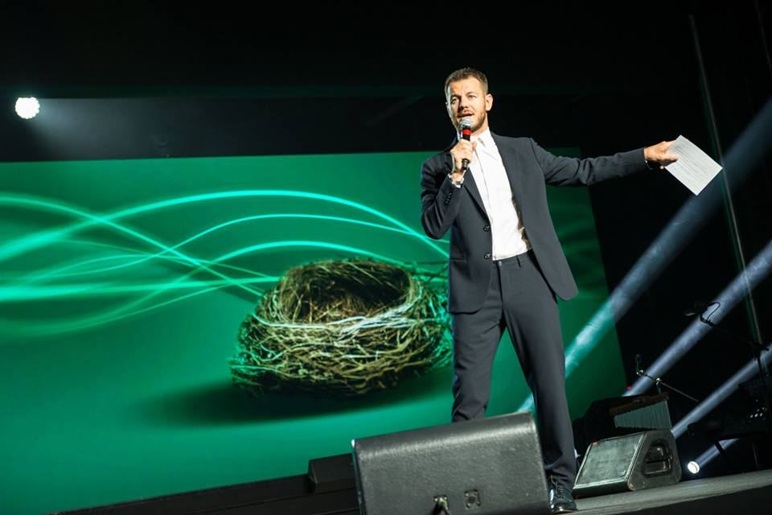
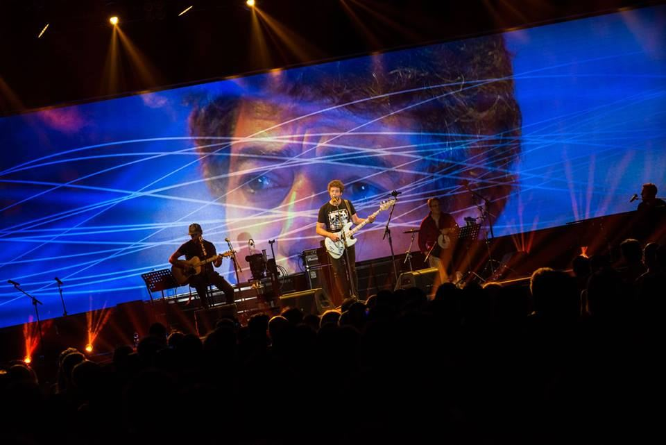
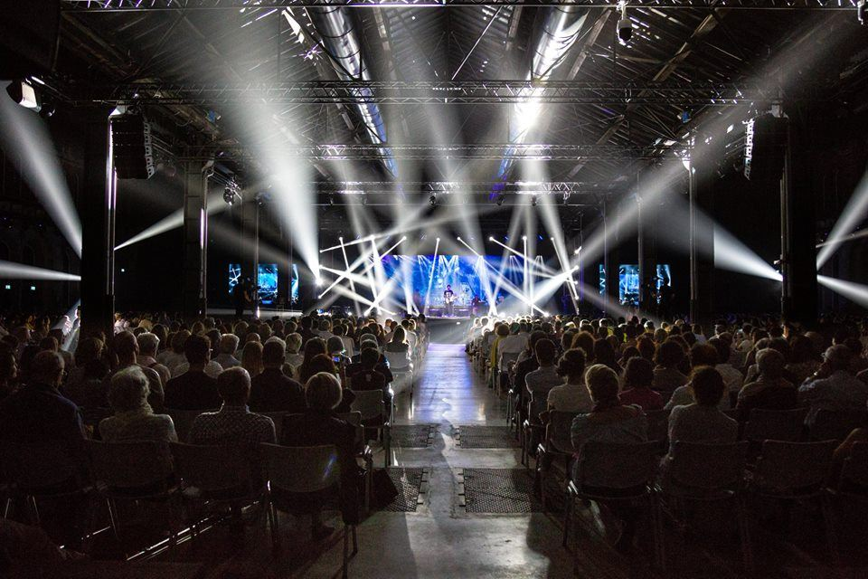

Nido is a monumental scenic installation designed by Cristian Taraborrelli for the launch of Intesa Sanpaolo’s insurance division — a 5-metre nest made entirely of interwoven branches, placed in the front courtyard of OGR Torino. The nest became the iconic symbol of the entire event: an archetype of protection, shelter, and care, translating the abstract concept of insurance into a powerful, tangible image.
Produced by Filmmaster Events, the evening blended the formats of a TED talk, a television show, and a live concert into a single innovative experience. Alessandro Cattelan led the narrative as word director, guiding conversations with eight distinguished guests before the night culminated in a concert by Max Gazzè. Over 1,500 people attended.
Nido è un’installazione scenica monumentale progettata da Cristian Taraborrelli per il lancio della divisione assicurativa di Intesa Sanpaolo — un nido di 5 metri realizzato interamente con rami intrecciati, posizionato nel cortile antistante le OGR di Torino. Il nido è diventato il simbolo iconico dell’intero evento: un archetipo di protezione, rifugio e cura, che traduce il concetto astratto di assicurazione in un’immagine potente e tangibile.
Prodotto da Filmmaster Events, la serata ha fuso i format del TED talk, dello show televisivo e del concerto dal vivo in un’unica esperienza innovativa. Alessandro Cattelan ha guidato la narrazione come word director, conducendo conversazioni con otto ospiti d’eccezione, prima che la serata culminasse nel concerto di Max Gazzè. Oltre 1.500 persone hanno partecipato.
Nido est une installation scénique monumentale conçue par Cristian Taraborrelli pour le lancement de la division assurance d’Intesa Sanpaolo — un nid de 5 mètres entièrement réalisé en branches entrelacées, installé dans la cour extérieure des OGR de Turin. Le nid est devenu le symbole iconique de l’événement : un archétype de protection, de refuge et de soin, traduisant le concept abstrait de l’assurance en une image puissante et tangible.
Produit par Filmmaster Events, la soirée a mêlé les formats du TED talk, du show télévisé et du concert live en une expérience innovante unique. Alessandro Cattelan a mené la narration en tant que word director, guidant les conversations avec huit invités de marque, avant que la soirée ne culmine avec le concert de Max Gazzè. Plus de 1 500 personnes y ont assisté.
Awards
L’Evento
Rather than a conventional corporate launch, Nido reinvented the format entirely. The evening was structured as an innovative hybrid — part TED talk, part television show, part live concert — with Alessandro Cattelan guiding the audience through a series of conversations about protection in all its forms: from architectural resilience to personal safeguards, from digital security to the protection of creativity.
Eight distinguished guests brought their unique perspectives to the stage: architect Stefano Boeri, football manager Fabio Capello, writer Alessandro D’Avenia, comedian and author Serena Dandini, stuntman Vittorio Brumotti, tech entrepreneur Salvatore Aranzulla, and singer Valentina Parisse. The evening culminated in a live concert by Max Gazzè, transforming the corporate event into a genuine cultural moment for the city of Turin.
Piuttosto che un lancio aziendale convenzionale, Nido ha reinventato completamente il formato. La serata è stata strutturata come un ibrido innovativo — in parte TED talk, in parte show televisivo, in parte concerto dal vivo — con Alessandro Cattelan che guidava il pubblico attraverso una serie di conversazioni sulla protezione in tutte le sue forme: dalla resilienza architettonica alle tutele personali, dalla sicurezza digitale alla protezione della creatività.
Otto ospiti d’eccezione hanno portato le loro prospettive uniche sul palco: l’architetto Stefano Boeri, il tecnico calcistico Fabio Capello, lo scrittore Alessandro D’Avenia, la comica e autrice Serena Dandini, lo stuntman Vittorio Brumotti, l’imprenditore digitale Salvatore Aranzulla e la cantante Valentina Parisse. La serata è culminata nel concerto dal vivo di Max Gazzè, trasformando l’evento corporate in un autentico momento culturale per la città di Torino.
Plutôt qu’un lancement d’entreprise conventionnel, Nido a entièrement réinventé le format. La soirée était structurée comme un hybride innovant — en partie TED talk, en partie show télévisé, en partie concert live — avec Alessandro Cattelan guidant le public à travers une série de conversations sur la protection sous toutes ses formes : de la résilience architecturale aux protections personnelles, de la sécurité numérique à la protection de la créativité.
Huit invités de marque ont apporté leurs perspectives uniques sur scène : l’architecte Stefano Boeri, l’entraîneur de football Fabio Capello, l’écrivain Alessandro D’Avenia, la comédienne et autrice Serena Dandini, le cascadeur Vittorio Brumotti, l’entrepreneur tech Salvatore Aranzulla et la chanteuse Valentina Parisse. La soirée a culminé avec le concert live de Max Gazzè, transformant l’événement d’entreprise en un véritable moment culturel pour la ville de Turin.
Gallery






La Visione — La Scenografia
“The nest is the most universal symbol of protection”, explains set designer Cristian Taraborrelli. “Every creature builds one — birds, insects, even humans in their earliest shelters. The challenge was to translate the abstract concept of insurance into something primal, tactile, immediately understood. A five-metre nest made entirely of interwoven branches, placed in the open courtyard of OGR, became a sculptural manifesto — protection made visible.”
The nest was designed not only as a centrepiece for the Turin event but as an itinerant symbol, conceived to travel across Italy as part of a series of ambient events, carrying its message of care and shelter wherever it went. The dramatic lighting design transformed the sculpture after dark, carving it out of the night with warm amber light and creating a beacon visible across the courtyard.
“Il nido è il simbolo più universale di protezione”, spiega lo scenografo Cristian Taraborrelli. “Ogni creatura ne costruisce uno — uccelli, insetti, persino gli umani nei loro primi rifugi. La sfida era tradurre il concetto astratto di assicurazione in qualcosa di primordiale, tattile, immediatamente comprensibile. Un nido di cinque metri realizzato interamente con rami intrecciati, posizionato nel cortile aperto delle OGR, è diventato un manifesto scultoreo — la protezione resa visibile.”
Il nido non è stato pensato solo come elemento centrale dell’evento torinese, ma come simbolo itinerante, concepito per viaggiare in tutta Italia come parte di una serie di eventi ambient, portando il suo messaggio di cura e protezione ovunque andasse. Il disegno luci drammatico trasformava la scultura dopo il tramonto, scolpendola dalla notte con luce ambrata calda e creando un faro visibile da tutto il cortile.
« Le nid est le symbole le plus universel de protection », explique le scénographe Cristian Taraborrelli. « Chaque créature en construit un — oiseaux, insectes, même les humains dans leurs premiers abris. Le défi était de traduire le concept abstrait de l’assurance en quelque chose de primordial, de tactile, d’immédiatement compréhensible. Un nid de cinq mètres entièrement réalisé en branches entrelacées, installé dans la cour ouverte des OGR, est devenu un manifeste sculptural — la protection rendue visible. »
Le nid n’a pas été pensé uniquement comme pièce maîtresse de l’événement turinois, mais comme un symbole itinérant, conçu pour voyager à travers l’Italie dans le cadre d’une série d’événements ambient, portant son message de soin et de protection partout où il allait. Le design lumière dramatique transformait la sculpture après la tombée de la nuit, la sculptant hors de l’obscurité avec une lumière ambre chaude et créant un phare visible depuis toute la cour.
La Venue — OGR Torino
The Officine Grandi Riparazioni — OGR — are one of the most striking examples of 19th-century industrial architecture in Italy. Built between 1885 and 1895 as the State’s major railway repair workshops in Northern Italy, the complex spans 35,000 square metres with its iconic H-shaped layout: two 200-metre-long wings connected by a central transept. The main naves rise to 13 metres, reaching 16 metres at the section known as the “Duomo.”
After closing at the end of the 1970s, the OGR were purchased in 2013 by Fondazione CRT, which invested over 100 million euros in a restoration completed in 1,000 working days. OGR Cult reopened on 30 September 2017 as a hub for contemporary art, music, and performance. The nest sculpture was placed in the front courtyard — transforming the threshold between the city and the cultural space into a monumental welcome.
Le Officine Grandi Riparazioni — OGR — sono uno degli esempi più straordinari di architettura industriale ottocentesca in Italia. Costruite tra il 1885 e il 1895 come principale officina ferroviaria dello Stato nel Nord Italia, il complesso si estende su 35.000 metri quadrati con la sua iconica pianta a H: due ali lunghe 200 metri collegate da un transetto centrale. Le navate principali raggiungono i 13 metri di altezza, toccando i 16 metri nella sezione nota come il “Duomo.”
Chiuse alla fine degli anni ’70, le OGR sono state acquistate nel 2013 dalla Fondazione CRT, che ha investito oltre 100 milioni di euro in un restauro completato in 1.000 giorni lavorativi. OGR Cult ha riaperto il 30 settembre 2017 come hub per arte contemporanea, musica e performance. La scultura del nido è stata collocata nel cortile antistante — trasformando la soglia tra la città e lo spazio culturale in un’accoglienza monumentale.
Les Officine Grandi Riparazioni — OGR — sont l’un des exemples les plus remarquables d’architecture industrielle du XIXe siècle en Italie. Construites entre 1885 et 1895 comme principal atelier de réparation ferroviaire de l’État dans le Nord de l’Italie, le complexe s’étend sur 35 000 mètres carrés avec son plan en H emblématique : deux ailes de 200 mètres de long reliées par un transept central. Les nefs principales s’élèvent à 13 mètres, atteignant 16 mètres dans la section dite du « Duomo ».
Fermées à la fin des années 1970, les OGR ont été acquises en 2013 par la Fondazione CRT, qui a investi plus de 100 millions d’euros dans une restauration achevée en 1 000 jours ouvrables. OGR Cult a rouvert le 30 septembre 2017 comme pôle d’art contemporain, de musique et de performance. La sculpture du nid a été placée dans la cour extérieure — transformant le seuil entre la ville et l’espace culturel en un accueil monumental.
Curiosità
Un nido itinerante. La scultura di 5 metri non era pensata solo per Torino: è stata concepita per viaggiare in tutta Italia come parte di una serie di eventi ambient, portando il messaggio di protezione di città in città.
Cattelan come word director. Alessandro Cattelan non si è limitato a presentare: ha creato un formato narrativo inedito, a metà tra un TED talk e uno show televisivo, guidando le conversazioni con otto personaggi dal background completamente diverso.
Otto voci sulla protezione. Dall’architetto Stefano Boeri che protegge le città con i boschi verticali, a Vittorio Brumotti che sfida la gravità su una bicicletta, a Salvatore Aranzulla che protegge la vita digitale: ogni ospite ha portato una prospettiva unica sul tema della cura.
Più grande del Colosseo. Il perimetro delle OGR misura 1.000 metri — il doppio di quello del Colosseo. Se il complesso fosse messo in verticale, raggiungerebbe 180 metri di altezza, superando i 168 della Mole Antonelliana.
Dal format all’archivio digitale. I contenuti della serata sono stati trasformati in materiale digitale e in un format televisivo speciale, accessibile attraverso la piattaforma Palazetto in stile TED, estendendo la portata dell’evento ben oltre la platea dei 1.500 presenti.
A travelling nest. The 5-metre sculpture was not designed for Turin alone: it was conceived to travel across Italy as part of a series of ambient events, carrying its message of protection from city to city.
Cattelan as word director. Alessandro Cattelan didn’t simply host: he created an unprecedented narrative format, halfway between a TED talk and a television show, guiding conversations with eight personalities from entirely different backgrounds.
Eight voices on protection. From architect Stefano Boeri who protects cities with vertical forests, to Vittorio Brumotti who defies gravity on a bicycle, to Salvatore Aranzulla who safeguards digital life: each guest brought a unique perspective on the theme of care.
Bigger than the Colosseum. The OGR’s perimeter measures 1,000 metres — twice the Colosseum’s. If the complex were stood upright, it would reach 180 metres, surpassing the Mole Antonelliana’s 168 metres.
From format to digital archive. The evening’s content was transformed into digital material and a special television format, accessible through the Palazetto platform in TED style, extending the event’s reach well beyond the 1,500 attendees.
Un nid itinérant. La sculpture de 5 mètres n’était pas destinée à Turin seule : elle a été conçue pour voyager à travers l’Italie dans le cadre d’une série d’événements ambient, portant son message de protection de ville en ville.
Cattelan comme word director. Alessandro Cattelan ne s’est pas contenté de présenter : il a créé un format narratif inédit, à mi-chemin entre un TED talk et un show télévisé, guidant les conversations avec huit personnalités aux parcours entièrement différents.
Huit voix sur la protection. De l’architecte Stefano Boeri qui protège les villes avec ses forêts verticales, à Vittorio Brumotti qui défie la gravité sur un vélo, à Salvatore Aranzulla qui protège la vie numérique : chaque invité a apporté une perspective unique sur le thème du soin.
Plus grand que le Colisée. Le périmètre des OGR mesure 1 000 mètres — le double de celui du Colisée. Si le complexe était mis à la verticale, il atteindrait 180 mètres, dépassant les 168 mètres de la Mole Antonelliana.
Du format à l’archive numérique. Le contenu de la soirée a été transformé en matériel numérique et en un format télévisé spécial, accessible via la plateforme Palazetto en style TED, étendant la portée de l’événement bien au-delà des 1 500 participants.
Team Creativo
Ospiti
Rassegna Stampa
« Cristian Taraborrelli cura la progettazione scenografica del grande nido iconico di 5 metri di diametro, alto quasi due, posizionato nel cortile delle OGR Officine Grandi Riparazioni, il simbolo dell’evento spettacolo che Intesa Sanpaolo ha dedicato alla Città sul tema della protezione. » « Cristian Taraborrelli designed the iconic 5-metre-wide, nearly 2-metre-tall nest placed in the courtyard of the OGR Officine Grandi Riparazioni, the symbol of the spectacular event that Intesa Sanpaolo dedicated to the city on the theme of protection. » « Cristian Taraborrelli a conçu le grand nid iconique de 5 mètres de diamètre, haut de près de deux mètres, placé dans la cour des OGR Officine Grandi Riparazioni, symbole de l’événement spectacle qu’Intesa Sanpaolo a dédié à la ville sur le thème de la protection. »
— Filmmaster Events · 20 giugno 2018
Per banche, assicurazioni, comunicazione corporate
Lo studio progetta eventi corporate ad alto impatto narrativo per banche, assicurazioni e gruppi industriali. Per Nido (Intesa Sanpaolo, BEA 2018 Bronze) ha tradotto un concetto di prodotto astratto — la protezione — in un'installazione iconica visibile da tutta la città, riportata da stampa e social, capace di generare conversazione oltre la sala. Il metodo si applica a lanci di prodotto, anniversari di marca, operazioni territoriali ad alto budget. Per richieste di gara, brief o consulenza creativa: creativestriketeam@libero.it.
The studio designs high-narrative corporate events for banks, insurance companies and industrial groups. For Nido (Intesa Sanpaolo, BEA 2018 Bronze) it translated an abstract product concept — protection — into an iconic installation visible across the city, reported by press and social, able to generate conversation well beyond the hall. The method applies to product launches, brand anniversaries, high-budget territorial operations. For tenders, briefs or creative consulting: creativestriketeam@libero.it.
Le studio conçoit des événements corporate à haut potentiel narratif pour les banques, les assurances et les groupes industriels. Pour Nido (Intesa Sanpaolo, BEA 2018 Bronze) il a traduit un concept produit abstrait — la protection — en une installation iconique visible depuis toute la ville, reprise par la presse et les réseaux, capable de générer la conversation bien au-delà de la salle. La méthode s'applique aux lancements produit, aux anniversaires de marque, aux opérations territoriales à haut budget. Pour appels d'offres, briefs ou conseil créatif : creativestriketeam@libero.it.
Tags